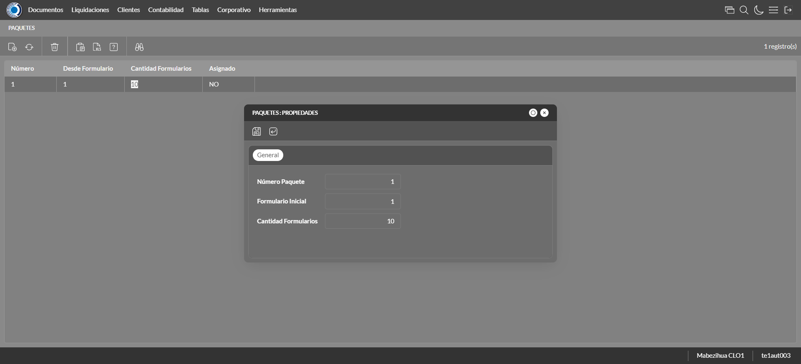

Desarrollado por : Area de Testing PWST
Fecha y hora de inicio : 2022-12-22 10:20:30
Duracion : 0:10:30.167030
Resultado : Total 52，Correctos 41 ，Errores 11 ，Taza de resultado 78.85%
Resumen 78.85% Errores 11 Fallidos 0 Correctos 41 Test realizados 52
| Caso de Prueba | Total | Correctos | Fallido | Error | Detalles | Captura del error |
| ScriptAmarillo.Test: Script Amarillo | 52 | 41 | 0 | 11 | Detalles | |
test |
ft1_1: 2022-12-22 10:20:31,530 - root - INFO - Se abre el chrome
2022-12-22 10:20:32,710 - root - INFO - Entra a la URL
2022-12-22 10:20:32,836 - root - INFO - Maximiza la pantalla
Traceback (most recent call last):
File "C:\Users\jsand\AppData\Local\Programs\Python\Python310\lib\site-packages\selenium-4.4.0-py3.10.egg\selenium\webdriver\remote\switch_to.py", line 87, in frame
frame_reference = self._driver.find_element(By.ID, frame_reference)
File "C:\Users\jsand\AppData\Local\Programs\Python\Python310\lib\site-packages\selenium-4.4.0-py3.10.egg\selenium\webdriver\remote\webdriver.py", line 856, in find_element
return self.execute(Command.FIND_ELEMENT, {
File "C:\Users\jsand\AppData\Local\Programs\Python\Python310\lib\site-packages\selenium-4.4.0-py3.10.egg\selenium\webdriver\remote\webdriver.py", line 434, in execute
self.error_handler.check_response(response)
File "C:\Users\jsand\AppData\Local\Programs\Python\Python310\lib\site-packages\selenium-4.4.0-py3.10.egg\selenium\webdriver\remote\errorhandler.py", line 243, in check_response
raise exception_class(message, screen, stacktrace)
selenium.common.exceptions.NoSuchElementException: Message: no such element: Unable to locate element: {"method":"css selector","selector":"[id="mainFrame"]"}
(Session info: chrome=108.0.5359.125)
Stacktrace:
Backtrace:
(No symbol) [0x011BF243]
(No symbol) [0x01147FD1]
(No symbol) [0x0103D04D]
(No symbol) [0x0106C0B0]
(No symbol) [0x0106C22B]
(No symbol) [0x0109E612]
(No symbol) [0x010885D4]
(No symbol) [0x0109C9EB]
(No symbol) [0x01088386]
(No symbol) [0x0106163C]
(No symbol) [0x0106269D]
GetHandleVerifier [0x01459A22+2655074]
GetHandleVerifier [0x0144CA24+2601828]
GetHandleVerifier [0x01268C0A+619850]
GetHandleVerifier [0x01267830+614768]
(No symbol) [0x011505FC]
(No symbol) [0x01155968]
(No symbol) [0x01155A55]
(No symbol) [0x0116051B]
BaseThreadInitThunk [0x76796BD9+25]
RtlGetFullPathName_UEx [0x77B58FD2+1218]
RtlGetFullPathName_UEx [0x77B58F9D+1165]
During handling of the above exception, another exception occurred:
Traceback (most recent call last):
File "C:\Users\jsand\AppData\Local\Programs\Python\Python310\lib\site-packages\selenium-4.4.0-py3.10.egg\selenium\webdriver\remote\switch_to.py", line 90, in frame
frame_reference = self._driver.find_element(By.NAME, frame_reference)
File "C:\Users\jsand\AppData\Local\Programs\Python\Python310\lib\site-packages\selenium-4.4.0-py3.10.egg\selenium\webdriver\remote\webdriver.py", line 856, in find_element
return self.execute(Command.FIND_ELEMENT, {
File "C:\Users\jsand\AppData\Local\Programs\Python\Python310\lib\site-packages\selenium-4.4.0-py3.10.egg\selenium\webdriver\remote\webdriver.py", line 434, in execute
self.error_handler.check_response(response)
File "C:\Users\jsand\AppData\Local\Programs\Python\Python310\lib\site-packages\selenium-4.4.0-py3.10.egg\selenium\webdriver\remote\errorhandler.py", line 243, in check_response
raise exception_class(message, screen, stacktrace)
selenium.common.exceptions.NoSuchElementException: Message: no such element: Unable to locate element: {"method":"css selector","selector":"[name="mainFrame"]"}
(Session info: chrome=108.0.5359.125)
Stacktrace:
Backtrace:
(No symbol) [0x011BF243]
(No symbol) [0x01147FD1]
(No symbol) [0x0103D04D]
(No symbol) [0x0106C0B0]
(No symbol) [0x0106C22B]
(No symbol) [0x0109E612]
(No symbol) [0x010885D4]
(No symbol) [0x0109C9EB]
(No symbol) [0x01088386]
(No symbol) [0x0106163C]
(No symbol) [0x0106269D]
GetHandleVerifier [0x01459A22+2655074]
GetHandleVerifier [0x0144CA24+2601828]
GetHandleVerifier [0x01268C0A+619850]
GetHandleVerifier [0x01267830+614768]
(No symbol) [0x011505FC]
(No symbol) [0x01155968]
(No symbol) [0x01155A55]
(No symbol) [0x0116051B]
BaseThreadInitThunk [0x76796BD9+25]
RtlGetFullPathName_UEx [0x77B58FD2+1218]
RtlGetFullPathName_UEx [0x77B58F9D+1165]
During handling of the above exception, another exception occurred:
Traceback (most recent call last):
File "C:\xampp\htdocs\versiones\automatizaciones\AutoPWST\ScriptAmarillo\testCase\ScriptAmarillo.py", line 104, in test
self.driver.switch_to.frame("mainFrame")
File "C:\Users\jsand\AppData\Local\Programs\Python\Python310\lib\site-packages\selenium-4.4.0-py3.10.egg\selenium\webdriver\remote\switch_to.py", line 92, in frame
raise NoSuchFrameException(frame_reference)
selenium.common.exceptions.NoSuchFrameException: Message: mainFrame
|
|
||||
test_000: Ingresa a la base de datos |
pt1_2: 2022-12-22 10:20:35,964 - root - INFO - Escribe el usuario
2022-12-22 10:20:36,063 - root - INFO - Escribe la contraseña
2022-12-22 10:20:36,155 - root - INFO - Se dio clic en el boton ingresar
2022-12-22 10:20:36,858 - root - INFO - Ejecutar Enterprise
2022-12-22 10:20:40,906 - root - INFO - Cambia entre pestañas
|
|
||||
test_001: Ingresa a pantalla Objetivos Diarios |
pt1_3: 2022-12-22 10:20:52,457 - root - INFO - Abre la pantalla de Objetivos Diarios
2022-12-22 10:20:53,006 - root - INFO - La pantalla ejecutada es Lista de precios.
2022-12-22 10:20:53,007 - root - INFO - Captura: C:\xampp\htdocs\versiones\automatizaciones\AutoPWST\ScriptAmarillo\report\img screen：20221222_10_20_53.png
2022-12-22 10:20:53,179 - root - INFO - Se presiona el boton 'Refrescar', para crear un nuevo registro igual al anterior.
2022-12-22 10:21:03,506 - root - INFO - Se presiona el boton 'Nuevo', para crear un nuevo registro.
|

|
||||
test_002: Agregar Objetivos Diarios |
pt1_4: 2022-12-22 10:21:04,059 - root - INFO - Se abrio la pantalla para el ingreso de un registro nuevo.
2022-12-22 10:21:04,087 - root - INFO - El campo 'Vendedor' si se encuentra visible.
2022-12-22 10:21:04,118 - root - INFO - El campo 'Fecha' si se encuentra visible.
2022-12-22 10:21:04,134 - root - INFO - El campo 'Efectividad %' si se encuentra visible.
2022-12-22 10:21:05,691 - root - INFO - Ingresa la efectividad del nuevo registro
2022-12-22 10:21:07,698 - root - INFO - Captura: C:\xampp\htdocs\versiones\automatizaciones\AutoPWST\ScriptAmarillo\report\img screen：20221222_10_21_07.png
2022-12-22 10:21:07,876 - root - INFO - Se hace el cambio de pestaña para continuar con el registro nuevo
2022-12-22 10:21:08,480 - root - INFO - Se presiona el boton 'Nuevo', para crear un nuevo registro.
2022-12-22 10:21:09,026 - root - INFO - El campo 'Grupo Política' si se encuentra visible.
2022-12-22 10:21:09,054 - root - INFO - El campo 'Tipo Objetivo' si se encuentra visible.
2022-12-22 10:21:09,085 - root - INFO - El campo 'Tipo Unidad' si se encuentra visible.
2022-12-22 10:21:09,101 - root - INFO - El campo 'Objetivo Cantidad' si se encuentra visible.
2022-12-22 10:21:09,132 - root - INFO - El campo 'Objetivo Cobertura' si se encuentra visible.
2022-12-22 10:21:11,299 - root - INFO - Ingresa el Objetivo Cantidad del nuevo registro
2022-12-22 10:21:11,388 - root - INFO - Ingresa el Objetivo Cobertura del nuevo registro
2022-12-22 10:21:11,439 - root - INFO - Se da clic en el boton Guardar; se debe crear un nuevo registro.
2022-12-22 10:21:11,673 - root - INFO - Se da clic en el boton Guardar; se debe crear un nuevo registro.
|
|||||
test_003: Repetir Registro Objetivos Diarios |
pt1_5: 2022-12-22 10:21:11,922 - root - INFO - Se presiona el boton 'Refrescar', para crear un nuevo registro igual al anterior.
2022-12-22 10:21:16,976 - root - INFO - Se presiona el boton 'Nuevo', para crear un nuevo registro igual al anterior.
2022-12-22 10:21:17,541 - root - INFO - Se abrio la pantalla para el ingreso de un registro nuevo.
2022-12-22 10:21:17,573 - root - INFO - El campo 'Vendedor' si se encuentra visible.
2022-12-22 10:21:17,604 - root - INFO - El campo 'Fecha' si se encuentra visible.
2022-12-22 10:21:17,620 - root - INFO - El campo 'Efectividad %' si se encuentra visible.
2022-12-22 10:21:19,206 - root - INFO - Ingresa la efectividad del nuevo registro
2022-12-22 10:21:19,257 - root - INFO - Se da clic en el boton Guardar; se debe crear un nuevo registro.
2022-12-22 10:21:21,263 - root - INFO - Captura: C:\xampp\htdocs\versiones\automatizaciones\AutoPWST\ScriptAmarillo\report\img screen：20221222_10_21_21.png
2022-12-22 10:21:21,505 - root - INFO - Se presiona el boton 'Cerrar', para cerrar el mensaje de duplicidad de llave primaria
2022-12-22 10:21:21,618 - root - INFO - Se presiona el boton 'Cerrar', para cerrar la ventana
|
|||||
test_004: Modifica Objetivos Diarios |
pt1_6: 2022-12-22 10:21:21,733 - root - INFO - Se presiona el boton 'Refrescar', para crear un nuevo registro igual al anterior.
2022-12-22 10:21:23,327 - root - INFO - Se da clic en el registro creado, para proceder a modificarlo.
2022-12-22 10:21:23,929 - root - INFO - Ingresa la efectividad del nuevo registro
2022-12-22 10:21:25,940 - root - INFO - Captura: C:\xampp\htdocs\versiones\automatizaciones\AutoPWST\ScriptAmarillo\report\img screen：20221222_10_21_25.png
2022-12-22 10:21:26,107 - root - INFO - Se hace el cambio de pestaña para continuar con el registro nuevo
2022-12-22 10:21:27,222 - root - INFO - Se da clic en el registro creado, para proceder a modificarlo.
2022-12-22 10:21:29,471 - root - INFO - Ingresa el Objetivo Cantidad del nuevo registro
2022-12-22 10:21:29,564 - root - INFO - Ingresa el Objetivo Cobertura del nuevo registro
2022-12-22 10:21:29,622 - root - INFO - Se da clic en el boton Guardar; se debe crear un nuevo registro.
2022-12-22 10:21:29,836 - root - INFO - Se da clic en el boton Guardar; se debe modificar la informacion del registro.
|
|||||
test_005: Elimina Objetivos Diarios |
pt1_7: 2022-12-22 10:21:30,091 - root - INFO - Se presiona el boton 'Refrescar', para proceder a eliminar el registro.
2022-12-22 10:21:31,706 - root - INFO - Se da clic en el registro creado, para proceder a eliminarlo.
2022-12-22 10:21:31,758 - root - INFO - Se presiona el boton 'Eliminar', para eliminar el registro.
2022-12-22 10:21:33,764 - root - INFO - Captura: C:\xampp\htdocs\versiones\automatizaciones\AutoPWST\ScriptAmarillo\report\img screen：20221222_10_21_33.png
2022-12-22 10:21:33,924 - root - INFO - Se confirma el eliminado del registro
2022-12-22 10:21:34,101 - root - INFO - Se presiona el boton 'Refrescar', para crear un nuevo registro igual al anterior.
2022-12-22 10:21:34,291 - root - INFO - Se presiona el boton 'Cerrar', para cerrar la pantalla de Categorias Fiscales.
|
|||||
test_006: Ingresa a pantalla Pop Ups |
pt1_8: 2022-12-22 10:21:35,236 - root - INFO - Abre la pantalla de PopUps
2022-12-22 10:21:36,325 - root - INFO - La pantalla ejecutada es PopUps.
2022-12-22 10:21:37,334 - root - INFO - Captura: C:\xampp\htdocs\versiones\automatizaciones\AutoPWST\ScriptAmarillo\report\img screen：20221222_10_21_37.png
2022-12-22 10:21:38,652 - root - INFO - Se ordenó por codigo.
2022-12-22 10:21:48,997 - root - INFO - Se presiona el boton 'Nuevo', para crear un nuevo registro.
|

|
||||
test_007: Agregar Pop Ups |
pt1_9: 2022-12-22 10:21:49,561 - root - INFO - Se abrio la pantalla para el ingreso de un registro nuevo.
2022-12-22 10:21:49,590 - root - INFO - El campo 'Codigo' si se encuentra visible.
2022-12-22 10:21:49,617 - root - INFO - El campo 'Orden' si se encuentra visible.
2022-12-22 10:21:49,645 - root - INFO - El campo 'Activo' si se encuentra visible.
2022-12-22 10:21:49,661 - root - INFO - El campo 'Descrición' si se encuentra visible.
2022-12-22 10:21:49,692 - root - INFO - El campo 'Modo Visualización' si se encuentra visible.
2022-12-22 10:21:49,724 - root - INFO - El campo 'Tipo Popup' si se encuentra visible.
2022-12-22 10:21:49,756 - root - INFO - El campo 'Fecha Desde' si se encuentra visible.
2022-12-22 10:21:49,775 - root - INFO - El campo 'Fecha Hasta' si se encuentra visible.
2022-12-22 10:21:49,806 - root - INFO - El campo 'Texto' si se encuentra visible.
2022-12-22 10:21:49,838 - root - INFO - El campo 'Seleccione Imagen' si se encuentra visible.
2022-12-22 10:21:49,887 - root - INFO - Ingresa el codigo del nuevo registro
2022-12-22 10:21:50,010 - root - INFO - Ingresa la orden del nuevo registro
2022-12-22 10:21:51,122 - root - INFO - Hizo click en el checkbox Activo
2022-12-22 10:21:51,281 - root - INFO - Ingresa la descripción del nuevo registro
2022-12-22 10:21:51,627 - root - INFO - Se dió click en la opción Pantalla Held.
2022-12-22 10:21:52,785 - root - INFO - Se dió doble click en el registro de Tipo Pop Up.
2022-12-22 10:21:53,006 - root - INFO - Ingresa el texto del nuevo registro
2022-12-22 10:21:54,016 - root - INFO - Captura: C:\xampp\htdocs\versiones\automatizaciones\AutoPWST\ScriptAmarillo\report\img screen：20221222_10_21_54.png
2022-12-22 10:21:54,223 - root - INFO - Se da clic en el boton Guardar; se debe crear un nuevo registro.
|
|||||
test_008: Repetir Registro Pop Ups |
pt1_10: 2022-12-22 10:21:54,560 - root - INFO - Se presiona el boton 'Refrescar', para crear un nuevo registro igual al anterior.
2022-12-22 10:21:55,120 - root - INFO - Se presiona el boton 'Nuevo', para crear un nuevo registro igual al anterior.
2022-12-22 10:21:55,667 - root - INFO - Se abrio la pantalla para el ingreso de un registro nuevo.
2022-12-22 10:21:55,697 - root - INFO - El campo 'Codigo' si se encuentra visible.
2022-12-22 10:21:55,719 - root - INFO - El campo 'Orden' si se encuentra visible.
2022-12-22 10:21:55,750 - root - INFO - El campo 'Activo' si se encuentra visible.
2022-12-22 10:21:55,766 - root - INFO - El campo 'Descrición' si se encuentra visible.
2022-12-22 10:21:55,797 - root - INFO - El campo 'Modo Visualización' si se encuentra visible.
2022-12-22 10:21:55,838 - root - INFO - El campo 'Tipo Popup' si se encuentra visible.
2022-12-22 10:21:55,867 - root - INFO - El campo 'Fecha Desde' si se encuentra visible.
2022-12-22 10:21:55,896 - root - INFO - El campo 'Fecha Hasta' si se encuentra visible.
2022-12-22 10:21:55,923 - root - INFO - El campo 'Texto' si se encuentra visible.
2022-12-22 10:21:55,944 - root - INFO - El campo 'Seleccione Imagen' si se encuentra visible.
2022-12-22 10:21:55,999 - root - INFO - Ingresa el codigo del nuevo registro
2022-12-22 10:21:56,065 - root - INFO - Ingresa la orden del nuevo registro
2022-12-22 10:21:57,202 - root - INFO - Hizo click en el checkbox Activo
2022-12-22 10:21:57,350 - root - INFO - Ingresa la descripción del nuevo registro
2022-12-22 10:21:57,706 - root - INFO - Se dió click en la opción Pantalla Hand Held.
2022-12-22 10:21:58,992 - root - INFO - Se dió doble click en el registro de Tipo PopUp.
2022-12-22 10:21:59,189 - root - INFO - Ingresa el texto del nuevo registro
2022-12-22 10:21:59,317 - root - INFO - Se da clic en el boton Guardar; NO se debe crear un nuevo registro.
2022-12-22 10:22:00,333 - root - INFO - Captura: C:\xampp\htdocs\versiones\automatizaciones\AutoPWST\ScriptAmarillo\report\img screen：20221222_10_22_00.png
2022-12-22 10:22:00,592 - root - INFO - Se presiona el boton 'Cerrar', para cerrar el mensaje de duplicidad de llave primaria
2022-12-22 10:22:00,839 - root - INFO - Se presiona el boton 'Cerrar', para cerrar la ventana
|
|||||
test_009: Modifica Pop Ups |
ft1_11: 2022-12-22 10:22:00,952 - root - INFO - Se presiona el boton 'Refrescar', para proceder a modificar el registro.
2022-12-22 10:22:02,879 - root - INFO - Se dió dos veces click en el encabezado para modificar el orden de los registros.
2022-12-22 10:22:05,012 - root - INFO - Se da clic en el registro creado, para proceder a modificarlo.
2022-12-22 10:22:05,668 - root - INFO - Se modifica el contenido del campo Orden
2022-12-22 10:22:06,765 - root - INFO - Hizo click en el checkbox activo
2022-12-22 10:22:06,989 - root - INFO - Se modifica el contenido del campo Descripción
2022-12-22 10:22:08,077 - root - ERROR - No se dió click en la opción Ambos, validar que la acción anterior haya finalizado, que el xpath sea el correcto o que la página no presente lentitud
2022-12-22 10:22:09,081 - root - INFO - Captura: C:\xampp\htdocs\versiones\automatizaciones\AutoPWST\ScriptAmarillo\report\img screen：20221222_10_22_09.png
2022-12-22 10:22:14,430 - root - INFO - Se presiona el boton 'Cerrar', para cerrar la ventana modal.
2022-12-22 10:22:14,547 - root - INFO - Se presiona el boton 'Cerrar', para cerrar la pantalla.
Traceback (most recent call last):
File "C:\xampp\htdocs\versiones\automatizaciones\AutoPWST\ScriptAmarillo\testCase\ScriptAmarillo.py", line 538, in test_009
raise Exception()
Exception
|
|||||
test_010: Elimina PopUps |
ft1_12: 2022-12-22 10:22:14,548 - root - ERROR - La pantalla anterior fallo por lo que esta no funcionara, para mas detalles del error consulte el reporte
Traceback (most recent call last):
File "C:\xampp\htdocs\versiones\automatizaciones\AutoPWST\ScriptAmarillo\testCase\ScriptAmarillo.py", line 581, in test_010
raise Exception()
Exception
|
|
||||
test_011: Ingresa a pantalla Paquetes Formulario |
pt1_13: 2022-12-22 10:22:15,443 - root - INFO - Abre la pantalla de Paquetes de Formularios
2022-12-22 10:22:15,998 - root - INFO - Captura: C:\xampp\htdocs\versiones\automatizaciones\AutoPWST\ScriptAmarillo\report\img screen：20221222_10_22_15.png
2022-12-22 10:22:16,102 - root - INFO - La pantalla ejecutada es Zonas de Ventas.
2022-12-22 10:22:26,448 - root - INFO - Se presiona el boton 'Nuevo', para crear un nuevo registro.
|

|
||||
test_012: Agregar Paquetes Formulario |
pt1_14: 2022-12-22 10:22:27,027 - root - INFO - Se abrio la pantalla para el ingreso de un registro nuevo.
2022-12-22 10:22:27,059 - root - INFO - El campo 'Número Paquete' si se encuentra visible.
2022-12-22 10:22:27,074 - root - INFO - El campo 'Formulario Inicial' si se encuentra visible.
2022-12-22 10:22:27,106 - root - INFO - El campo 'Cantidad Formularios' si se encuentra visible.
2022-12-22 10:22:28,167 - root - INFO - Captura: C:\xampp\htdocs\versiones\automatizaciones\AutoPWST\ScriptAmarillo\report\img screen：20221222_10_22_28.png
2022-12-22 10:22:28,291 - root - INFO - Ingresa la cantidad de formularios del nuevo registro
2022-12-22 10:22:28,345 - root - INFO - Se da clic en el boton Guardar; se debe crear un nuevo registro.
|

|
||||
test_013: Modifica Paquetes Formulario |
pt1_15: 2022-12-22 10:22:28,654 - root - INFO - Se presiona el boton 'Refrescar', para crear un nuevo registro igual al anterior.
2022-12-22 10:22:30,787 - root - INFO - Se da clic en el registro creado, para proceder a modificarlo.
2022-12-22 10:22:31,794 - root - INFO - Captura: C:\xampp\htdocs\versiones\automatizaciones\AutoPWST\ScriptAmarillo\report\img screen：20221222_10_22_31.png
2022-12-22 10:22:32,005 - root - INFO - Se presiona el boton 'Cerrar', para cerrar la ventana
|
 | ||||
test_014: Elimina Paquetes Formulario |
pt1_16: 2022-12-22 10:22:32,115 - root - INFO - Se presiona el boton 'Refrescar', para proceder a eliminar el registro.
2022-12-22 10:22:33,709 - root - INFO - Se da clic en el registro creado, para proceder a eliminarlo.
2022-12-22 10:22:33,774 - root - INFO - Se presiona el boton 'Eliminar', para eliminar el registro.
2022-12-22 10:22:34,777 - root - INFO - Captura: C:\xampp\htdocs\versiones\automatizaciones\AutoPWST\ScriptAmarillo\report\img screen：20221222_10_22_34.png
2022-12-22 10:22:34,952 - root - INFO - Se confirma el eliminado del registro
2022-12-22 10:22:35,159 - root - INFO - Se presiona el boton 'Refrescar', para crear un nuevo registro igual al anterior.
2022-12-22 10:22:35,355 - root - INFO - Se presiona el boton 'Cerrar', para cerrar la pantalla de Categorias Fiscales.
|

|
||||
test_015: Ingresa a pantalla Perfiles Comision |
pt1_17: 2022-12-22 10:22:36,270 - root - INFO - Abre la pantalla de Perfiles de Comisión
2022-12-22 10:22:36,816 - root - INFO - La pantalla ejecutada es Perfiles de Comisión.
2022-12-22 10:22:36,817 - root - INFO - Captura: C:\xampp\htdocs\versiones\automatizaciones\AutoPWST\ScriptAmarillo\report\img screen：20221222_10_22_36.png
2022-12-22 10:22:47,092 - root - INFO - Se presiona el boton 'Nuevo', para crear un nuevo registro.
|

|
||||
test_016: Agregar Perfiles Comision |
pt1_18: 2022-12-22 10:22:47,651 - root - INFO - Se abrio la pantalla para el ingreso de un registro nuevo.
2022-12-22 10:22:47,671 - root - INFO - El campo 'Codigo' si se encuentra visible.
2022-12-22 10:22:47,734 - root - INFO - El campo 'Descrición' si se encuentra visible.
2022-12-22 10:22:47,766 - root - INFO - El campo 'Porcentaje Global' si se encuentra visible.
2022-12-22 10:22:47,813 - root - INFO - El campo 'Con impuesto' si se encuentra visible.
2022-12-22 10:22:47,841 - root - INFO - El campo 'Comisión Repartidor' si se encuentra visible.
2022-12-22 10:22:47,932 - root - INFO - Ingresa el codigo del nuevo registro
2022-12-22 10:22:48,031 - root - INFO - Ingresa la descripción del nuevo registro
2022-12-22 10:22:48,136 - root - INFO - Ingresa el Porcentaje Global del nuevo registro
2022-12-22 10:22:48,193 - root - INFO - Se hizó click en el Checkbox Con impuesto
2022-12-22 10:22:48,242 - root - INFO - Se hizó click en el checkbox Comisión Repartidor
2022-12-22 10:22:49,251 - root - INFO - Captura: C:\xampp\htdocs\versiones\automatizaciones\AutoPWST\ScriptAmarillo\report\img screen：20221222_10_22_49.png
2022-12-22 10:22:49,430 - root - INFO - Se hace el cambio a la pestaña Topes para continuar con el registro nuevo
2022-12-22 10:22:50,044 - root - INFO - Se presiona el boton 'Nuevo', para crear un nuevo registro de Topes.
2022-12-22 10:22:50,588 - root - INFO - El campo 'Moneda' si se encuentra visible.
2022-12-22 10:22:50,619 - root - INFO - El campo 'Tope' si se encuentra visible.
2022-12-22 10:22:50,639 - root - INFO - El campo 'Porcentaje' si se encuentra visible.
2022-12-22 10:22:51,546 - root - INFO - Se dió doble click en el registro de Moneda.
2022-12-22 10:22:51,625 - root - INFO - Ingresa el tope del nuevo registro
2022-12-22 10:22:51,722 - root - INFO - Ingresa el Porcentaje del nuevo registro
2022-12-22 10:22:51,803 - root - INFO - Se da clic en el boton Guardar; se debe crear un nuevo registro de Topes.
2022-12-22 10:22:52,064 - root - INFO - Se hace el cambio a la pestaña Cuenta Articulo para continuar con el registro nuevo
2022-12-22 10:22:52,638 - root - INFO - Se presiona el boton 'Nuevo', para crear un nuevo registro de Cuenta Articulo.
2022-12-22 10:22:53,182 - root - INFO - El campo 'Cuenta' si se encuentra visible.
2022-12-22 10:22:53,213 - root - INFO - El campo 'Artículo' si se encuentra visible.
2022-12-22 10:22:53,244 - root - INFO - El campo 'Porcentaje' si se encuentra visible.
2022-12-22 10:22:54,706 - root - INFO - Se dió doble click en el registro de Cuenta.
2022-12-22 10:22:56,305 - root - INFO - Se dió doble click en el registro de Articulo.
2022-12-22 10:22:56,408 - root - INFO - Ingresa el Porcentaje del nuevo registro
2022-12-22 10:22:56,595 - root - INFO - Se da clic en el boton Guardar; se debe crear un nuevo registro de Cuenta Articulo.
2022-12-22 10:22:56,848 - root - INFO - Se hace el cambio a la pestaña Cuentas para continuar con el registro nuevo
2022-12-22 10:22:57,439 - root - INFO - Se presiona el boton 'Nuevo', para crear un nuevo registro de Cuentas.
2022-12-22 10:22:57,981 - root - INFO - El campo 'Cuenta' si se encuentra visible.
2022-12-22 10:22:58,013 - root - INFO - El campo 'Porcentaje' si se encuentra visible.
2022-12-22 10:22:59,451 - root - INFO - Se dió doble click en el registro de Cuenta.
2022-12-22 10:22:59,571 - root - INFO - Ingresa el Porcentaje del nuevo registro
2022-12-22 10:22:59,678 - root - INFO - Se da clic en el boton Guardar; se debe crear un nuevo registro de Cuentas.
2022-12-22 10:22:59,907 - root - INFO - Se hace el cambio a la pestaña Articulos para continuar con el registro nuevo
2022-12-22 10:23:00,498 - root - INFO - Se presiona el boton 'Nuevo', para crear un nuevo registro de Articulos.
2022-12-22 10:23:01,044 - root - INFO - El campo 'Artículo' si se encuentra visible.
2022-12-22 10:23:01,075 - root - INFO - El campo 'Porcentaje' si se encuentra visible.
2022-12-22 10:23:02,488 - root - INFO - Se dió doble click en el registro de Articulo.
2022-12-22 10:23:02,576 - root - INFO - Ingresa el Porcentaje del nuevo registro
2022-12-22 10:23:02,801 - root - INFO - Se da clic en el boton Guardar; se debe crear un nuevo registro de Articulos.
2022-12-22 10:23:03,038 - root - INFO - Se hace el cambio a la pestaña Tipos de Documento para continuar con el registro nuevo
2022-12-22 10:23:03,632 - root - INFO - Se presiona el boton 'Nuevo', para crear un nuevo registro de Tipo Documento.
2022-12-22 10:23:04,198 - root - INFO - El campo 'Tipo Documento' si se encuentra visible.
2022-12-22 10:23:04,230 - root - INFO - El campo 'Origen' si se encuentra visible.
2022-12-22 10:23:04,261 - root - INFO - El campo 'Signo' si se encuentra visible.
2022-12-22 10:23:04,305 - root - INFO - El campo 'Cancelado' si se encuentra visible.
2022-12-22 10:23:05,191 - root - INFO - Se dió doble click en el registro de Tipo Documento.
2022-12-22 10:23:07,574 - root - INFO - Se dió click en la opción Backoffice.
2022-12-22 10:23:07,968 - root - INFO - Se dió click en la opción Suma.
2022-12-22 10:23:08,052 - root - INFO - Se dió click en el checkbox Cancelado.
2022-12-22 10:23:08,127 - root - INFO - Se da clic en el boton Guardar; se debe crear un nuevo registro de Tipos Documento.
2022-12-22 10:23:08,372 - root - INFO - Se da clic en el boton Guardar; se debe crear un nuevo registro.
|

|
||||
test_017: Repetir Registro Perfiles Comision |
pt1_19: 2022-12-22 10:23:08,654 - root - INFO - Se presiona el boton 'Refrescar', para crear un nuevo registro igual al anterior.
2022-12-22 10:23:08,805 - root - INFO - Se presiona el boton 'Nuevo', para crear un nuevo registro igual al anterior.
2022-12-22 10:23:09,365 - root - INFO - Se abrio la pantalla para el ingreso de un registro nuevo.
2022-12-22 10:23:09,412 - root - INFO - El campo 'Codigo' si se encuentra visible.
2022-12-22 10:23:09,459 - root - INFO - El campo 'Descrición' si se encuentra visible.
2022-12-22 10:23:09,490 - root - INFO - El campo 'Porcentaje Global' si se encuentra visible.
2022-12-22 10:23:09,571 - root - INFO - El campo 'Con impuesto' si se encuentra visible.
2022-12-22 10:23:09,623 - root - INFO - El campo 'Comisión Repartidor' si se encuentra visible.
2022-12-22 10:23:09,713 - root - INFO - Ingresa el codigo del nuevo registro
2022-12-22 10:23:09,831 - root - INFO - Ingresa la descripción del nuevo registro
2022-12-22 10:23:09,909 - root - INFO - Ingresa el Porcentaje Global del nuevo registro
2022-12-22 10:23:10,029 - root - INFO - Se hizó click en el Checkbox Con impuesto
2022-12-22 10:23:10,114 - root - INFO - Se hizó click en el checkbox Comisión Repartidor
2022-12-22 10:23:10,190 - root - INFO - Se da clic en el boton Guardar; No se debe crear un nuevo registro.
2022-12-22 10:23:11,201 - root - INFO - Captura: C:\xampp\htdocs\versiones\automatizaciones\AutoPWST\ScriptAmarillo\report\img screen：20221222_10_23_11.png
2022-12-22 10:23:11,452 - root - INFO - Se presiona el boton 'Cerrar', para cerrar el mensaje de duplicidad de llave primaria
2022-12-22 10:23:11,587 - root - INFO - Se presiona el boton 'Cerrar', para cerrar la ventana
|
|||||
test_018: Modifica Perfiles Comision |
pt1_20: 2022-12-22 10:23:11,721 - root - INFO - Se presiona el boton 'Refrescar', para proceder a modificar el registro.
2022-12-22 10:23:13,323 - root - INFO - Se da doble click en el registro creado, para proceder a modificarlo.
2022-12-22 10:23:14,003 - root - INFO - Se modifica el contenido del campo Descripción
2022-12-22 10:23:14,099 - root - INFO - Se modifica el contenido del campo Porcentaje Global
2022-12-22 10:23:14,165 - root - INFO - Se hizó click en el checkbox Con impuesto
2022-12-22 10:23:14,227 - root - INFO - Se hizó click en el checkbox Comisión Repartidor
2022-12-22 10:23:16,239 - root - INFO - Captura: C:\xampp\htdocs\versiones\automatizaciones\AutoPWST\ScriptAmarillo\report\img screen：20221222_10_23_16.png
2022-12-22 10:23:16,426 - root - INFO - Se da clic en el boton Guardar; se debe modificar la informacion del registro.
|

|
||||
test_019: Elimina Perfiles Comision |
pt1_21: 2022-12-22 10:23:16,790 - root - INFO - Se presiona el boton 'Refrescar', para proceder a eliminar el registro.
2022-12-22 10:23:18,374 - root - INFO - Se da clic en el registro creado, para proceder a eliminarlo.
2022-12-22 10:23:19,456 - root - INFO - Se da clic en la ventana de tope, para proceder a eliminarlo.
2022-12-22 10:23:20,517 - root - INFO - Se da clic en el tope creado, para proceder a eliminarlo.
2022-12-22 10:23:21,137 - root - INFO - Se da clic en la ventana cuenta/articulo, para proceder a eliminarlo.
2022-12-22 10:23:22,218 - root - INFO - Se da clic en la cuenta/articulo creado, para proceder a eliminarlo.
2022-12-22 10:23:22,856 - root - INFO - Se da clic en la ventana cuentas, para proceder a eliminarlo.
2022-12-22 10:23:23,924 - root - INFO - Se da clic en la cuenta creado, para proceder a eliminarlo.
2022-12-22 10:23:24,555 - root - INFO - Se da clic en la cuenta/articulo creado, para proceder a eliminarlo.
2022-12-22 10:23:25,635 - root - INFO - Se da clic en el articulo creado, para proceder a eliminarlo.
2022-12-22 10:23:26,254 - root - INFO - Se da clic en la ventana tipo documento, para proceder a eliminarlo.
2022-12-22 10:23:27,335 - root - INFO - Se da clic en el tipo de documento creado, para proceder a eliminarlo.
2022-12-22 10:23:27,548 - root - INFO - Se da clic en el boton Guardar; se debe crear un nuevo registro.
2022-12-22 10:23:28,118 - root - INFO - Se da clic en el registro creado, para proceder a eliminarlo.
2022-12-22 10:23:28,174 - root - INFO - Se presiona el boton 'Eliminar', para eliminar el registro.
2022-12-22 10:23:28,175 - root - INFO - Captura: C:\xampp\htdocs\versiones\automatizaciones\AutoPWST\ScriptAmarillo\report\img screen：20221222_10_23_28.png
2022-12-22 10:23:28,408 - root - INFO - Se confirma el eliminado del registro
2022-12-22 10:23:28,590 - root - INFO - Se presiona el boton 'Refrescar', para verificar que el registro se ha eliminado.
2022-12-22 10:23:28,724 - root - INFO - Se presiona el boton 'Cerrar', para cerrar la pantalla de Perfiles de Comisión.
|
|||||
test_020: Ingresa a pantalla Politicas de Venta |
pt1_22: 2022-12-22 10:23:29,621 - root - INFO - Abre la pantalla de Politicas de Venta
2022-12-22 10:23:30,684 - root - INFO - La pantalla ejecutada es Politicas de Venta
2022-12-22 10:23:31,688 - root - INFO - Captura: C:\xampp\htdocs\versiones\automatizaciones\AutoPWST\ScriptAmarillo\report\img screen：20221222_10_23_31.png
2022-12-22 10:23:41,978 - root - INFO - Se presiona el boton 'Nuevo', para crear un nuevo registro.
|

|
||||
test_021: Agregar Perfiles Politicas de Venta |
pt1_23: 2022-12-22 10:23:42,537 - root - INFO - Se abrio la pantalla para el ingreso de un registro nuevo.
2022-12-22 10:23:42,566 - root - INFO - El campo 'Codigo' si se encuentra visible.
2022-12-22 10:23:42,647 - root - INFO - El campo 'Codigo Alternativo' si se encuentra visible.
2022-12-22 10:23:42,678 - root - INFO - El campo 'Descrición' si se encuentra visible.
2022-12-22 10:23:42,709 - root - INFO - El campo 'Moneda' si se encuentra visible.
2022-12-22 10:23:42,756 - root - INFO - El campo 'Aplicable en' si se encuentra visible.
2022-12-22 10:23:42,788 - root - INFO - El campo 'Activa' si se encuentra visible.
2022-12-22 10:23:42,819 - root - INFO - El campo 'Aplicación Global' si se encuentra visible.
2022-12-22 10:23:42,902 - root - INFO - Ingresa el codigo del nuevo registro
2022-12-22 10:23:42,983 - root - INFO - Ingresa el codigo alternativo del nuevo registro
2022-12-22 10:23:43,143 - root - INFO - Ingresa la descripción del nuevo registro
2022-12-22 10:23:44,054 - root - INFO - Se dió doble click en el registro de Moneda.
2022-12-22 10:23:44,572 - root - INFO - Se dió click en la opción BackOffice y Mobile.
2022-12-22 10:23:45,647 - root - INFO - Se dió click en el checkbox Activa.
2022-12-22 10:23:45,714 - root - INFO - Se dió click en el checkbox Aplicación Global.
2022-12-22 10:23:45,798 - root - INFO - Se hace el cambio a la pestaña Por Articulo para continuar con el registro nuevo
2022-12-22 10:23:46,388 - root - INFO - Se presiona el boton 'Nuevo', para crear un nuevo registro de Por Articulo.
2022-12-22 10:23:47,040 - root - INFO - El campo 'Artículo' si se encuentra visible.
2022-12-22 10:23:47,078 - root - INFO - El campo 'Artículo a Bonificar' si se encuentra visible.
2022-12-22 10:23:47,110 - root - INFO - El campo 'Cantidad a Bonificar(Packing)' si se encuentra visible.
2022-12-22 10:23:47,157 - root - INFO - El campo 'Cantidad en Bonificación(Unidad)' si se encuentra visible.
2022-12-22 10:23:47,209 - root - INFO - El campo 'Tope Descuento 1' si se encuentra visible.
2022-12-22 10:23:47,245 - root - INFO - El campo 'Tope Descuento 2' si se encuentra visible.
2022-12-22 10:23:47,366 - root - INFO - Ingresa el Articulo del nuevo registro
2022-12-22 10:23:47,479 - root - INFO - Ingresa el Articulo a bonificar del nuevo registro
2022-12-22 10:23:47,611 - root - INFO - Ingresa la Cantidad a Bonificar del nuevo registro
2022-12-22 10:23:47,725 - root - INFO - Ingresa la Cantidad en Bonificación del nuevo registro
2022-12-22 10:23:47,936 - root - INFO - Ingresa el Tope Descuento 1 del nuevo registro
2022-12-22 10:23:48,111 - root - INFO - Ingresa el Tope Descuento 2 del nuevo registro
2022-12-22 10:23:49,116 - root - INFO - Captura: C:\xampp\htdocs\versiones\automatizaciones\AutoPWST\ScriptAmarillo\report\img screen：20221222_10_23_49.png
2022-12-22 10:23:49,396 - root - INFO - Se presiona el boton 'Guardar', para guardar el registro de Por Articulo.
2022-12-22 10:23:49,688 - root - INFO - Se da clic en el boton Guardar; se debe crear un nuevo registro.
|

|
||||
test_022: Repetir Registro Politicas de Venta |
pt1_24: 2022-12-22 10:23:50,075 - root - INFO - Se presiona el boton 'Refrescar', para crear un nuevo registro igual al anterior.
2022-12-22 10:23:50,273 - root - INFO - Se presiona el boton 'Nuevo', para crear un nuevo registro igual al anterior.
2022-12-22 10:23:50,817 - root - INFO - Se abrio la pantalla para el ingreso de un registro nuevo.
2022-12-22 10:23:50,935 - root - INFO - Ingresa el codigo del nuevo registro
2022-12-22 10:23:51,027 - root - INFO - Ingresa el codigo alternativo del nuevo registro
2022-12-22 10:23:51,210 - root - INFO - Ingresa la descripción del nuevo registro
2022-12-22 10:23:52,138 - root - INFO - Se dió doble click en el registro de Moneda.
2022-12-22 10:23:52,662 - root - INFO - Se dió click en la opción BackOffice y Mobile.
2022-12-22 10:23:52,729 - root - INFO - Se dió click en el checkbox Activa.
2022-12-22 10:23:52,796 - root - INFO - Se dió click en el checkbox Aplicación Global.
2022-12-22 10:23:52,882 - root - INFO - Se da clic en el boton Guardar; No se debe crear un nuevo registro.
2022-12-22 10:23:53,885 - root - INFO - Captura: C:\xampp\htdocs\versiones\automatizaciones\AutoPWST\ScriptAmarillo\report\img screen：20221222_10_23_53.png
2022-12-22 10:23:54,160 - root - INFO - Se presiona el boton 'Cerrar', para cerrar el mensaje de duplicidad de llave primaria
2022-12-22 10:23:54,367 - root - INFO - Se presiona el boton 'Cerrar', para cerrar la ventana
|
|||||
test_023: Modifica Politicas de Venta |
pt1_25: 2022-12-22 10:23:54,513 - root - INFO - Se presiona el boton 'Refrescar', para proceder a modificar el registro.
2022-12-22 10:23:56,113 - root - INFO - Se da clic en el registro creado, para proceder a modificarlo.
2022-12-22 10:23:56,815 - root - INFO - Se modifica el contenido del campo Codigo Alternativo
2022-12-22 10:23:57,060 - root - INFO - Se modifica el contenido del campo Descripcion
2022-12-22 10:23:57,146 - root - INFO - Se dió click en el checkbox Aplicación Global.
2022-12-22 10:23:57,231 - root - INFO - Se hace el cambio a la pestaña Por Articulo para continuar con la modificacion del registro
2022-12-22 10:23:58,335 - root - INFO - Se da clic en el registro de Por Articulo, para proceder a modificarlo.
2022-12-22 10:23:59,086 - root - INFO - Se modifica el contenido del campo Articulo
2022-12-22 10:23:59,310 - root - INFO - Se modifica el contenido del campo Articulo a Bonificar
2022-12-22 10:23:59,488 - root - INFO - Se modifica el contenido del campo Cantidad a Bonificar
2022-12-22 10:23:59,709 - root - INFO - Se modifica el contenido del campo Cantidad en Bonificación
2022-12-22 10:24:00,726 - root - INFO - Captura: C:\xampp\htdocs\versiones\automatizaciones\AutoPWST\ScriptAmarillo\report\img screen：20221222_10_24_00.png
2022-12-22 10:24:01,046 - root - INFO - Se presiona el boton 'Guardar', para guardar la modificación del registro de Por Articulo.
2022-12-22 10:24:01,291 - root - INFO - Se da clic en el boton Guardar; se debe modificar la informacion del registro.
|
|||||
test_024: Elimina Politicas de Venta |
pt1_26: 2022-12-22 10:24:01,686 - root - INFO - Se presiona el boton 'Refrescar', para proceder a eliminar el registro.
2022-12-22 10:24:03,297 - root - INFO - Se da clic en el registro creado, para proceder a eliminarlo.
2022-12-22 10:24:03,878 - root - INFO - Se hace el cambio a la pestaña Por Articulo para continuar con la eliminación del registro
2022-12-22 10:24:04,951 - root - INFO - Se da clic en el registro Por Articulo, para proceder a eliminarlo.
2022-12-22 10:24:05,007 - root - INFO - Se presiona el boton 'Eliminar', para eliminar el registro de Por Articulo.
2022-12-22 10:24:05,156 - root - INFO - Se da clic en el boton Guardar; se debe modificar la informacion del registro.
2022-12-22 10:24:05,741 - root - INFO - Se da clic en el registro creado, para proceder a eliminarlo.
2022-12-22 10:24:06,824 - root - INFO - Se presiona el boton 'Eliminar', para eliminar el registro.
2022-12-22 10:24:06,824 - root - INFO - Captura: C:\xampp\htdocs\versiones\automatizaciones\AutoPWST\ScriptAmarillo\report\img screen：20221222_10_24_06.png
2022-12-22 10:24:06,993 - root - INFO - Se confirma el eliminado del registro
2022-12-22 10:24:07,172 - root - INFO - Se presiona el boton 'Refrescar', para verificar si el registro ha sido eliminado.
2022-12-22 10:24:07,374 - root - INFO - Se presiona el boton 'Cerrar', para cerrar la pantalla de Politicas de Venta.
|
|||||
test_025: Ingresa a pantalla Modelos de Liquidacion |
pt1_27: 2022-12-22 10:24:08,254 - root - INFO - Abre la pantalla de Modelos Liquidación
2022-12-22 10:24:08,807 - root - INFO - La pantalla ejecutada es Modelos Liquidacion.
2022-12-22 10:24:10,817 - root - INFO - Captura: C:\xampp\htdocs\versiones\automatizaciones\AutoPWST\ScriptAmarillo\report\img screen：20221222_10_24_10.png
2022-12-22 10:24:11,009 - root - INFO - Se presiona el boton 'Nuevo', para crear un nuevo registro.
|
|||||
test_026: Agregar Perfiles Modelos de Liquidacion |
pt1_28: 2022-12-22 10:24:11,575 - root - INFO - Se abrio la pantalla para el ingreso de un registro nuevo.
2022-12-22 10:24:11,621 - root - INFO - El campo 'Codigo' si se encuentra visible.
2022-12-22 10:24:11,652 - root - INFO - El campo 'Descrición' si se encuentra visible.
2022-12-22 10:24:11,699 - root - INFO - El campo 'Cantidad de días para generación de nueva liquidación' si se encuentra visible.
2022-12-22 10:24:11,731 - root - INFO - El campo 'Cantidad máxima de liquidaciones activas por vendedor' si se encuentra visible.
2022-12-22 10:24:11,783 - root - INFO - El campo 'Lista Precio valorización diferencias' por dif. tipo cambio' si se encuentra visible.
2022-12-22 10:24:11,822 - root - INFO - El campo 'Código del modelo de cobranza' si se encuentra visible.
2022-12-22 10:24:11,858 - root - INFO - El campo 'Mostrar advertencias' si se encuentra visible.
2022-12-22 10:24:11,890 - root - INFO - El campo 'Requerir cierre de liquidación en carga definitiva' si se encuentra visible.
2022-12-22 10:24:11,937 - root - INFO - El campo 'Permitir quitar documentos de liquidación cerrada' si se encuentra visible.
2022-12-22 10:24:11,999 - root - INFO - El campo 'Inhibir operaciones sobre liquidación cerrada' si se encuentra visible.
2022-12-22 10:24:12,031 - root - INFO - El campo 'Permitir cerrar liquidaciones vacias' si se encuentra visible.
2022-12-22 10:24:12,078 - root - INFO - El campo 'Inhibir carga si hay liquidaciones activas' si se encuentra visible.
2022-12-22 10:24:12,125 - root - INFO - El campo 'Solicitar fecha de cierre' si se encuentra visible.
2022-12-22 10:24:12,156 - root - INFO - El campo 'Ignorar errores al descargar cheques' si se encuentra visible.
2022-12-22 10:24:12,203 - root - INFO - El campo 'Desde Fecha' si se encuentra visible.
2022-12-22 10:24:12,235 - root - INFO - El campo 'Hasta Fecha' si se encuentra visible.
2022-12-22 10:24:12,282 - root - INFO - El campo 'Fecha vigencia precios' si se encuentra visible.
2022-12-22 10:24:12,328 - root - INFO - El campo 'Carga precios y políticas' si se encuentra visible.
2022-12-22 10:24:12,359 - root - INFO - El campo 'hasta' si se encuentra visible.
2022-12-22 10:24:12,428 - root - INFO - Ingresa el codigo del nuevo registro
2022-12-22 10:24:12,724 - root - INFO - Ingresa la descripción del nuevo registro
2022-12-22 10:24:12,828 - root - INFO - Ingresa la cantidad de días del nuevo registro
2022-12-22 10:24:12,958 - root - INFO - Ingresa la cantidad maxima del nuevo registro
2022-12-22 10:24:13,901 - root - INFO - Se dió doble click en el registro de Lista Precio.
2022-12-22 10:24:14,965 - root - INFO - Se dió doble click en el registro de Codigo Modelo.
2022-12-22 10:24:15,192 - root - INFO - Se movió la pantalla hacia abajo.
2022-12-22 10:24:16,293 - root - INFO - Se dió click en el checkbox Mostrar Advertencias.
2022-12-22 10:24:16,376 - root - INFO - Se dió click en el checkbox Cierre Liquidacion Carga Definitiva.
2022-12-22 10:24:16,450 - root - INFO - Se dió click en el checkbox Quitar Documentos.
2022-12-22 10:24:16,526 - root - INFO - Se dió click en el checkbox Inhibir Operaciones.
2022-12-22 10:24:16,605 - root - INFO - Se dió click en el checkbox Cerrar Liquidaciones Vacias.
2022-12-22 10:24:16,684 - root - INFO - Se dió click en el checkbox Inhibir Carga.
2022-12-22 10:24:16,765 - root - INFO - Se dió click en el checkbox Solicitar Fecha Cierre.
2022-12-22 10:24:16,842 - root - INFO - Se dió click en el checkbox Ignorar Errores.
2022-12-22 10:24:17,255 - root - INFO - Se dió click en el botón Hoy para seleccionar la fecha Actual.
2022-12-22 10:24:17,653 - root - INFO - Se dió click en el botón Hoy para seleccionar la fecha Actual.
2022-12-22 10:24:18,052 - root - INFO - Se dió click en el botón Hoy para seleccionar la fecha Actual.
2022-12-22 10:24:18,436 - root - INFO - Se dió click en la opción de Carga precios y politcas.
2022-12-22 10:24:20,442 - root - INFO - Captura: C:\xampp\htdocs\versiones\automatizaciones\AutoPWST\ScriptAmarillo\report\img screen：20221222_10_24_20.png
2022-12-22 10:24:20,634 - root - INFO - Se da clic en el boton Guardar; se debe crear un nuevo registro.
|

|
||||
test_027: Repetir Registro Modelos de Liquidacion |
pt1_29: 2022-12-22 10:24:20,883 - root - INFO - Se presiona el boton 'Refrescar', para crear un nuevo registro igual al anterior.
2022-12-22 10:24:21,117 - root - INFO - Se presiona el boton 'Nuevo', para crear un nuevo registro igual al anterior.
2022-12-22 10:24:21,687 - root - INFO - Se abrio la pantalla para el ingreso de un registro nuevo.
2022-12-22 10:24:21,710 - root - INFO - El campo 'Codigo' si se encuentra visible.
2022-12-22 10:24:21,757 - root - INFO - El campo 'Descrición' si se encuentra visible.
2022-12-22 10:24:21,789 - root - INFO - El campo 'Cantidad de días para generación de nueva liquidación' si se encuentra visible.
2022-12-22 10:24:21,820 - root - INFO - El campo 'Cantidad máxima de liquidaciones activas por vendedor' si se encuentra visible.
2022-12-22 10:24:21,867 - root - INFO - El campo 'Lista Precio valorización diferencias' por dif. tipo cambio' si se encuentra visible.
2022-12-22 10:24:21,907 - root - INFO - El campo 'Código del modelo de cobranza' si se encuentra visible.
2022-12-22 10:24:21,945 - root - INFO - El campo 'Mostrar advertencias' si se encuentra visible.
2022-12-22 10:24:21,976 - root - INFO - El campo 'Requerir cierre de liquidación en carga definitiva' si se encuentra visible.
2022-12-22 10:24:22,022 - root - INFO - El campo 'Permitir quitar documentos de liquidación cerrada' si se encuentra visible.
2022-12-22 10:24:22,054 - root - INFO - El campo 'Inhibir operaciones sobre liquidación cerrada' si se encuentra visible.
2022-12-22 10:24:22,101 - root - INFO - El campo 'Permitir cerrar liquidaciones vacias' si se encuentra visible.
2022-12-22 10:24:22,132 - root - INFO - El campo 'Inhibir carga si hay liquidaciones activas' si se encuentra visible.
2022-12-22 10:24:22,179 - root - INFO - El campo 'Solicitar fecha de cierre' si se encuentra visible.
2022-12-22 10:24:22,226 - root - INFO - El campo 'Ignorar errores al descargar cheques' si se encuentra visible.
2022-12-22 10:24:22,258 - root - INFO - El campo 'Desde Fecha' si se encuentra visible.
2022-12-22 10:24:22,305 - root - INFO - El campo 'Hasta Fecha' si se encuentra visible.
2022-12-22 10:24:22,352 - root - INFO - El campo 'Fecha vigencia precios' si se encuentra visible.
2022-12-22 10:24:22,383 - root - INFO - El campo 'Carga precios y políticas' si se encuentra visible.
2022-12-22 10:24:22,438 - root - INFO - El campo 'hasta' si se encuentra visible.
2022-12-22 10:24:22,495 - root - INFO - Ingresa el codigo del nuevo registro
2022-12-22 10:24:22,803 - root - INFO - Ingresa la descripción del nuevo registro
2022-12-22 10:24:22,939 - root - INFO - Ingresa la cantidad de días del nuevo registro
2022-12-22 10:24:23,039 - root - INFO - Ingresa la cantidad maxima del nuevo registro
2022-12-22 10:24:23,968 - root - INFO - Se dió doble click en el registro de Lista Precio.
2022-12-22 10:24:25,034 - root - INFO - Se dió doble click en el registro de Codigo Modelo.
2022-12-22 10:24:25,273 - root - INFO - Se movió la pagina hacía abajo.
2022-12-22 10:24:26,385 - root - INFO - Se dió click en el checkbox Mostrar Advertencias.
2022-12-22 10:24:26,464 - root - INFO - Se dió click en el checkbox Cierre Liquidacion Carga Definitiva.
2022-12-22 10:24:26,540 - root - INFO - Se dió click en el checkbox Quitar Documentos.
2022-12-22 10:24:26,621 - root - INFO - Se dió click en el checkbox Inhibir Operaciones.
2022-12-22 10:24:26,703 - root - INFO - Se dió click en el checkbox Cerrar Liquidaciones Vacias.
2022-12-22 10:24:26,787 - root - INFO - Se dió click en el checkbox Inhibir Carga.
2022-12-22 10:24:26,870 - root - INFO - Se dió click en el checkbox Solicitar Fecha Cierre.
2022-12-22 10:24:26,950 - root - INFO - Se dió click en el checkbox Ignorar Errores.
2022-12-22 10:24:27,355 - root - INFO - Se dió click en el botón Hoy para seleccionar la fecha Actual.
2022-12-22 10:24:27,772 - root - INFO - Se dió click en el botón Hoy para seleccionar la fecha Actual.
2022-12-22 10:24:30,202 - root - INFO - Se dió click en el botón Hoy para seleccionar la fecha Actual.
2022-12-22 10:24:30,601 - root - INFO - Se dió click en la opción de Carga Precios y Politicas.
2022-12-22 10:24:30,678 - root - INFO - Se da clic en el boton Guardar; No se debe crear un nuevo registro.
2022-12-22 10:24:32,683 - root - INFO - Captura: C:\xampp\htdocs\versiones\automatizaciones\AutoPWST\ScriptAmarillo\report\img screen：20221222_10_24_32.png
2022-12-22 10:24:33,097 - root - INFO - Se presiona el boton 'Cerrar', para cerrar el mensaje de duplicidad de llave primaria
2022-12-22 10:24:33,207 - root - INFO - Se presiona el boton 'Cerrar', para cerrar la ventana
|
|||||
test_028: Modifica Modelos de Liquidacion |
pt1_30: 2022-12-22 10:24:33,365 - root - INFO - Se presiona el boton 'Refrescar', para proceder a modificar el registro.
2022-12-22 10:24:34,999 - root - INFO - Se da clic en el registro creado, para proceder a modificarlo.
2022-12-22 10:24:36,005 - root - INFO - Se modifica el contenido del campo Descripción
2022-12-22 10:24:36,171 - root - INFO - Se modifica el contenido del campo Cantidad de Días
2022-12-22 10:24:36,339 - root - INFO - Se modifica el contenido del campo Cantidad Maxima
2022-12-22 10:24:37,578 - root - INFO - Se dió doble click en el registro de Lista Precio.
2022-12-22 10:24:38,698 - root - INFO - Se dió doble click en el registro de Codigo Modelo.
2022-12-22 10:24:38,932 - root - INFO - Se movió la pantalla hacia abajo.
2022-12-22 10:24:39,023 - root - INFO - Se dió click en el checkbox Mostrar Advertencias.
2022-12-22 10:24:39,107 - root - INFO - Se dió click en el checkbox Cierre Liquidacion Carga Definitiva.
2022-12-22 10:24:39,196 - root - INFO - Se dió click en el checkbox Quitar Documentos.
2022-12-22 10:24:39,286 - root - INFO - Se dió click en el checkbox Inhibir Operaciones.
2022-12-22 10:24:39,411 - root - INFO - Se dió click en el checkbox Cerrar Liquidaciones Vacias.
2022-12-22 10:24:39,518 - root - INFO - Se dió click en el checkbox Inhibir Carga.
2022-12-22 10:24:39,628 - root - INFO - Se dió click en el checkbox Ignorar Errores.
2022-12-22 10:24:40,064 - root - INFO - Se dió click en el botón Hoy para seleccionar la fecha Actual.
2022-12-22 10:24:40,524 - root - INFO - Se dió click en el botón Hoy para seleccionar la fecha Actual.
2022-12-22 10:24:40,995 - root - INFO - Se dió click en el botón Hoy para seleccionar la fecha Actual.
2022-12-22 10:24:41,403 - root - INFO - Se dió click en la opción de Carga precios y politcas.
2022-12-22 10:24:42,109 - root - INFO - Se dió click en la opción de Hasta.
2022-12-22 10:24:42,111 - root - INFO - Captura: C:\xampp\htdocs\versiones\automatizaciones\AutoPWST\ScriptAmarillo\report\img screen：20221222_10_24_42.png
2022-12-22 10:24:42,432 - root - INFO - Se da clic en el boton Guardar; se debe modificar la informacion del registro.
|
|||||
test_029: Elimina Modelos de Liquidacion |
pt1_31: 2022-12-22 10:24:42,704 - root - INFO - Se presiona el boton 'Refrescar', para proceder a eliminar el registro.
2022-12-22 10:24:44,321 - root - INFO - Se da clic en el registro creado, para proceder a eliminarlo.
2022-12-22 10:24:44,450 - root - INFO - Se presiona el boton 'Eliminar', para eliminar el registro.
2022-12-22 10:24:46,460 - root - INFO - Captura: C:\xampp\htdocs\versiones\automatizaciones\AutoPWST\ScriptAmarillo\report\img screen：20221222_10_24_46.png
2022-12-22 10:24:46,776 - root - INFO - Se confirma el eliminado del registro
2022-12-22 10:24:47,052 - root - INFO - Se presiona el boton 'Refrescar', para verificar si el registro ha sido eliminado.
2022-12-22 10:24:47,237 - root - INFO - Se presiona el boton 'Cerrar', para cerrar la pantalla de Modelos Liquidación.
|
|||||
test_030: Ingresa a pantalla Politicas AdHoc |
pt1_32: 2022-12-22 10:24:47,560 - root - INFO - El nombre de la pantalla para la automatización
2022-12-22 10:24:49,021 - root - INFO - La pantalla ejecutada es GRUPO DE POLÍTICAS AD HOC.
2022-12-22 10:24:49,021 - root - INFO - Captura: C:\xampp\htdocs\versiones\automatizaciones\AutoPWST\ScriptAmarillo\report\img screen：20221222_10_24_49.png
2022-12-22 10:24:49,503 - root - INFO - Se presiona el boton 'Nuevo', para crear un nuevo registro.
|

|
||||
test_031: Agregar Perfiles Politicas AdHoc |
pt1_33: 2022-12-22 10:24:50,101 - root - INFO - Se abrio la pantalla para el ingreso de un registro nuevo.
2022-12-22 10:24:50,196 - root - INFO - El campo 'Codigo' si se encuentra visible.
2022-12-22 10:24:50,276 - root - INFO - El campo 'Código Alternativo' si se encuentra visible.
2022-12-22 10:24:50,339 - root - INFO - El campo 'Descrición' si se encuentra visible.
2022-12-22 10:24:50,488 - root - INFO - Ingresa el codigo del nuevo registro
2022-12-22 10:24:50,712 - root - INFO - Ingresa el codigo alternativo del nuevo registro
2022-12-22 10:24:50,950 - root - INFO - Ingresa la descripción del nuevo registro
2022-12-22 10:24:52,955 - root - INFO - Captura: C:\xampp\htdocs\versiones\automatizaciones\AutoPWST\ScriptAmarillo\report\img screen：20221222_10_24_52.png
2022-12-22 10:24:53,233 - root - INFO - Se da clic en el boton Guardar; se debe crear un nuevo registro.
|

|
||||
test_032: Repetir Registro Politicas AdHoc |
pt1_34: 2022-12-22 10:24:53,530 - root - INFO - Se presiona el boton 'Refrescar', para crear un nuevo registro igual al anterior.
2022-12-22 10:24:53,683 - root - INFO - Se presiona el boton 'Nuevo', para crear un nuevo registro igual al anterior.
2022-12-22 10:24:54,252 - root - INFO - Se abrio la pantalla para el ingreso de un registro nuevo.
2022-12-22 10:24:54,299 - root - INFO - El campo 'Codigo' si se encuentra visible.
2022-12-22 10:24:54,352 - root - INFO - El campo 'Código Alternativo' si se encuentra visible.
2022-12-22 10:24:54,393 - root - INFO - El campo 'Descrición' si se encuentra visible.
2022-12-22 10:24:54,494 - root - INFO - Ingresa el codigo del nuevo registro
2022-12-22 10:24:54,617 - root - INFO - Ingresa el codigo alternativo del nuevo registro
2022-12-22 10:24:54,946 - root - INFO - Ingresa la descripción del nuevo registro
2022-12-22 10:24:55,040 - root - INFO - Se da clic en el boton Guardar; se debe crear un nuevo registro.
2022-12-22 10:24:57,048 - root - INFO - Captura: C:\xampp\htdocs\versiones\automatizaciones\AutoPWST\ScriptAmarillo\report\img screen：20221222_10_24_57.png
2022-12-22 10:24:57,389 - root - INFO - Se presiona el boton 'Cerrar', para cerrar el mensaje de duplicidad de llave primaria
2022-12-22 10:24:57,519 - root - INFO - Se presiona el boton 'Cerrar', para cerrar la ventana
|
|||||
test_033: Modifica Politicas AdHoc |
pt1_35: 2022-12-22 10:24:57,669 - root - INFO - Se presiona el boton 'Refrescar', para crear un nuevo registro igual al anterior.
2022-12-22 10:24:59,297 - root - INFO - Se da clic en el registro creado, para proceder a modificarlo.
2022-12-22 10:25:00,058 - root - INFO - Ingresa el codigo alternativo del nuevo registro
2022-12-22 10:25:00,397 - root - INFO - Se modifica el contenido del campo Descripcion
2022-12-22 10:25:02,403 - root - INFO - Captura: C:\xampp\htdocs\versiones\automatizaciones\AutoPWST\ScriptAmarillo\report\img screen：20221222_10_25_02.png
2022-12-22 10:25:02,781 - root - INFO - Se da clic en el boton Guardar; se debe modificar la informacion del registro.
|

|
||||
test_034: Elimina Politicas AdHoc |
pt1_36: 2022-12-22 10:25:03,087 - root - INFO - Se presiona el boton 'Refrescar', para proceder a eliminar el registro.
2022-12-22 10:25:04,761 - root - INFO - Se da clic en el registro creado, para proceder a eliminarlo.
2022-12-22 10:25:04,933 - root - INFO - Se presiona el boton 'Eliminar', para eliminar el registro.
2022-12-22 10:25:06,943 - root - INFO - Captura: C:\xampp\htdocs\versiones\automatizaciones\AutoPWST\ScriptAmarillo\report\img screen：20221222_10_25_06.png
2022-12-22 10:25:07,611 - root - INFO - Se confirma el eliminado del registro
2022-12-22 10:25:07,806 - root - INFO - Se presiona el boton 'Refrescar', para crear un nuevo registro igual al anterior.
2022-12-22 10:25:08,037 - root - INFO - Se presiona el boton 'Cerrar', para cerrar la pantalla de Categorias Fiscales.
|

|
||||
test_035: Ingresa a pantalla Programacion de Politicas |
ft1_37: 2022-12-22 10:26:08,624 - root - ERROR - No se pudo encontrar el menu indicado, revise si el xpath sigue siendo el mismo, para mas detalles del error consulte el reporte
2022-12-22 10:26:08,624 - root - INFO - Captura: C:\xampp\htdocs\versiones\automatizaciones\AutoPWST\ScriptAmarillo\report\img screen：20221222_10_26_08.png
2022-12-22 10:26:24,483 - root - ERROR - No se encontró el botón Cerrar, revise si el xpath sigue siendo el mismo, para mas detalles del error consulte el reporte
2022-12-22 10:26:27,494 - root - INFO - Captura: C:\xampp\htdocs\versiones\automatizaciones\AutoPWST\ScriptAmarillo\report\img screen：20221222_10_26_27.png
Traceback (most recent call last):
File "C:\xampp\htdocs\versiones\automatizaciones\AutoPWST\ScriptAmarillo\testCase\ScriptAmarillo.py", line 1570, in test_035
raise Exception()
Exception
|
|||||
test_036: Agregar Perfiles Programacion de Politicas |
ft1_38: 2022-12-22 10:26:27,877 - root - ERROR - La pantalla anterior fallo por lo que esta no funcionara, para mas detalles del error consulte el reporte
Traceback (most recent call last):
File "C:\xampp\htdocs\versiones\automatizaciones\AutoPWST\ScriptAmarillo\testCase\ScriptAmarillo.py", line 1613, in test_036
raise Exception()
Exception
|
|
||||
test_037: Repetir Registro Programacion de Politicas |
ft1_39: 2022-12-22 10:26:27,877 - root - ERROR - La pantalla anterior fallo por lo que esta no funcionara, para mas detalles del error consulte el reporte
Traceback (most recent call last):
File "C:\xampp\htdocs\versiones\automatizaciones\AutoPWST\ScriptAmarillo\testCase\ScriptAmarillo.py", line 1653, in test_037
raise Exception()
Exception
|
|
||||
test_038: Modifica Programacion de Politicas |
ft1_40: 2022-12-22 10:26:27,877 - root - ERROR - La pantalla anterior fallo por lo que esta no funcionara, para mas detalles del error consulte el reporte
Traceback (most recent call last):
File "C:\xampp\htdocs\versiones\automatizaciones\AutoPWST\ScriptAmarillo\testCase\ScriptAmarillo.py", line 1693, in test_038
raise Exception()
Exception
|
|
||||
test_039: Elimina Programacion de Politicas |
ft1_41: 2022-12-22 10:26:27,877 - root - ERROR - La pantalla anterior fallo por lo que esta no funcionara, para mas detalles del error consulte el reporte
Traceback (most recent call last):
File "C:\xampp\htdocs\versiones\automatizaciones\AutoPWST\ScriptAmarillo\testCase\ScriptAmarillo.py", line 1733, in test_039
raise Exception()
Exception
|
|
||||
test_040: Ingresa a pantalla Instancias Encuestas |
pt1_42: 2022-12-22 10:27:15,614 - root - INFO - Abre la pantalla de Instancias Encuestas
2022-12-22 10:27:16,210 - root - INFO - La pantalla ejecutada es Instancias Encuestas.
2022-12-22 10:27:16,211 - root - INFO - Captura: C:\xampp\htdocs\versiones\automatizaciones\AutoPWST\ScriptAmarillo\report\img screen：20221222_10_27_16.png
2022-12-22 10:27:16,642 - root - INFO - Se presiona el boton 'Refrescar', para crear un nuevo registro igual al anterior.
|

|
||||
test_041: Agregar Perfiles Instancias Encuestas |
pt1_43: 2022-12-22 10:27:28,958 - root - INFO - Se presiona el boton 'Nuevo', para crear un nuevo registro.
2022-12-22 10:27:29,565 - root - INFO - Se abrio la pantalla para el ingreso de un registro nuevo.
2022-12-22 10:27:29,659 - root - INFO - El campo 'Codigo' si se encuentra visible.
2022-12-22 10:27:29,766 - root - INFO - El campo 'Descrición' si se encuentra visible.
2022-12-22 10:27:29,812 - root - INFO - El campo 'Desde Fecha' si se encuentra visible.
2022-12-22 10:27:29,874 - root - INFO - El campo 'Hasta Fecha' si se encuentra visible.
2022-12-22 10:27:29,953 - root - INFO - El campo 'Fecha tope modificación' si se encuentra visible.
2022-12-22 10:27:30,015 - root - INFO - El campo 'Grupo artículos' si se encuentra visible.
2022-12-22 10:27:30,078 - root - INFO - El campo 'Frecuencia' si se encuentra visible.
2022-12-22 10:27:30,125 - root - INFO - El campo 'Grupo entidades multipropósito' si se encuentra visible.
2022-12-22 10:27:30,188 - root - INFO - El campo 'Obligatoria' si se encuentra visible.
2022-12-22 10:27:30,251 - root - INFO - El campo 'Solicitar motivo de no encuesta' si se encuentra visible.
2022-12-22 10:27:30,313 - root - INFO - El campo 'Agrupar tipos de encuesta por modo de respuestas' si se encuentra visible.
2022-12-22 10:27:30,424 - root - INFO - Ingresa el codigo del nuevo registro
2022-12-22 10:27:30,696 - root - INFO - Ingresa la descripción del nuevo registro
2022-12-22 10:27:36,157 - root - INFO - Captura: C:\xampp\htdocs\versiones\automatizaciones\AutoPWST\ScriptAmarillo\report\img screen：20221222_10_27_36.png
2022-12-22 10:27:36,673 - root - INFO - Se hace el cambio de pestaña para continuar con el registro nuevo
2022-12-22 10:27:37,327 - root - INFO - Se presiona el boton 'Nuevo', para crear un nuevo registro.
2022-12-22 10:27:37,933 - root - INFO - El campo 'Tipo Encuesta' si se encuentra visible.
2022-12-22 10:27:37,994 - root - INFO - El campo 'Orden' si se encuentra visible.
2022-12-22 10:27:39,346 - root - INFO - Ingresa la Orden del nuevo registro
2022-12-22 10:27:39,520 - root - INFO - Se da clic en el boton Guardar; se debe crear un nuevo registro.
2022-12-22 10:27:39,857 - root - INFO - Se da clic en el boton Guardar; se debe crear un nuevo registro.
|
|||||
test_042: Repetir Registro Instancias Encuestas |
pt1_44: 2022-12-22 10:27:40,187 - root - INFO - Se presiona el boton 'Refrescar', para crear un nuevo registro igual al anterior.
2022-12-22 10:27:42,299 - root - INFO - Se presiona el boton 'Nuevo', para crear un nuevo registro igual al anterior.
2022-12-22 10:27:42,881 - root - INFO - Se abrio la pantalla para el ingreso de un registro nuevo.
2022-12-22 10:27:42,943 - root - INFO - El campo 'Codigo' si se encuentra visible.
2022-12-22 10:27:43,000 - root - INFO - El campo 'Descrición' si se encuentra visible.
2022-12-22 10:27:43,051 - root - INFO - El campo 'Desde Fecha' si se encuentra visible.
2022-12-22 10:27:43,097 - root - INFO - El campo 'Hasta Fecha' si se encuentra visible.
2022-12-22 10:27:43,160 - root - INFO - El campo 'Fecha tope modificación' si se encuentra visible.
2022-12-22 10:27:43,207 - root - INFO - El campo 'Grupo artículos' si se encuentra visible.
2022-12-22 10:27:43,269 - root - INFO - El campo 'Frecuencia' si se encuentra visible.
2022-12-22 10:27:43,317 - root - INFO - El campo 'Grupo entidades multipropósito' si se encuentra visible.
2022-12-22 10:27:43,364 - root - INFO - El campo 'Obligatoria' si se encuentra visible.
2022-12-22 10:27:43,442 - root - INFO - El campo 'Solicitar motivo de no encuesta' si se encuentra visible.
2022-12-22 10:27:43,504 - root - INFO - El campo 'Agrupar tipos de encuesta por modo de respuestas' si se encuentra visible.
2022-12-22 10:27:43,622 - root - INFO - Ingresa el codigo del nuevo registro
2022-12-22 10:27:43,864 - root - INFO - Ingresa la descripción del nuevo registro
2022-12-22 10:27:47,003 - root - INFO - Se da clic en el boton Guardar; se debe crear un nuevo registro.
2022-12-22 10:27:49,005 - root - INFO - Captura: C:\xampp\htdocs\versiones\automatizaciones\AutoPWST\ScriptAmarillo\report\img screen：20221222_10_27_49.png
2022-12-22 10:27:49,353 - root - INFO - Se presiona el boton 'Cerrar', para cerrar el mensaje de duplicidad de llave primaria
2022-12-22 10:27:49,504 - root - INFO - Se presiona el boton 'Cerrar', para cerrar la ventana
|
|||||
test_043: Modifica Instancias Encuestas |
pt1_45: 2022-12-22 10:27:49,664 - root - INFO - Se presiona el boton 'Refrescar', para crear un nuevo registro igual al anterior.
2022-12-22 10:27:52,332 - root - INFO - Se da clic en el registro creado, para proceder a modificarlo.
2022-12-22 10:27:53,162 - root - INFO - Se modifica el contenido del campo Descripcion
2022-12-22 10:27:55,169 - root - INFO - Captura: C:\xampp\htdocs\versiones\automatizaciones\AutoPWST\ScriptAmarillo\report\img screen：20221222_10_27_55.png
2022-12-22 10:28:00,241 - root - INFO - Captura: C:\xampp\htdocs\versiones\automatizaciones\AutoPWST\ScriptAmarillo\report\img screen：20221222_10_28_00.png
2022-12-22 10:28:00,509 - root - INFO - Se hace el cambio de pestaña para continuar con el registro nuevo
2022-12-22 10:28:01,600 - root - INFO - Se da clic en el registro creado, para proceder a modificarlo.
2022-12-22 10:28:01,671 - root - INFO - Se presiona el boton 'Eliminar', para eliminar el registro.
2022-12-22 10:28:01,829 - root - INFO - Se presiona el boton 'Nuevo', para crear un nuevo registro.
2022-12-22 10:28:03,438 - root - INFO - Ingresa la Orden del nuevo registro
2022-12-22 10:28:03,558 - root - INFO - Se da clic en el boton Guardar; se debe crear un nuevo registro.
2022-12-22 10:28:03,856 - root - INFO - Se da clic en el boton Guardar; se debe modificar la informacion del registro.
|
|||||
test_044: Elimina Instancias Encuestas |
pt1_46: 2022-12-22 10:28:04,962 - root - INFO - Se presiona el boton 'Refrescar', para proceder a eliminar el registro.
2022-12-22 10:28:07,594 - root - INFO - Se da clic en el registro creado, para proceder a eliminarlo.
2022-12-22 10:28:08,192 - root - INFO - Se hace el cambio de pestaña para continuar con el registro nuevo
2022-12-22 10:28:13,675 - root - INFO - Se da clic en el registro creado, para proceder a modificarlo.
2022-12-22 10:28:13,758 - root - INFO - Se presiona el boton 'Eliminar', para eliminar el registro.
2022-12-22 10:28:13,915 - root - INFO - Se da clic en el boton Guardar; se debe modificar la informacion del registro.
2022-12-22 10:28:16,243 - root - INFO - Se da clic en el registro creado, para proceder a eliminarlo.
2022-12-22 10:28:16,334 - root - INFO - Se presiona el boton 'Eliminar', para eliminar el registro.
2022-12-22 10:28:18,346 - root - INFO - Captura: C:\xampp\htdocs\versiones\automatizaciones\AutoPWST\ScriptAmarillo\report\img screen：20221222_10_28_18.png
2022-12-22 10:28:18,594 - root - INFO - Se confirma el eliminado del registro
2022-12-22 10:28:19,107 - root - INFO - Se presiona el boton 'Refrescar', para crear un nuevo registro igual al anterior.
2022-12-22 10:28:19,523 - root - INFO - Se presiona el boton 'Cerrar', para cerrar la pantalla de Categorias Fiscales.
|
|||||
test_045: Ingresa a pantalla Clasificacion Vendedor |
ft1_47: 2022-12-22 10:28:20,458 - root - INFO - Abre la pantalla de Clasificación Vendedor
2022-12-22 10:28:21,016 - root - INFO - La pantalla ejecutada es Clasificación Vendedor.
2022-12-22 10:28:21,016 - root - INFO - Captura: C:\xampp\htdocs\versiones\automatizaciones\AutoPWST\ScriptAmarillo\report\img screen：20221222_10_28_21.png
Traceback (most recent call last):
File "C:\xampp\htdocs\versiones\automatizaciones\AutoPWST\ScriptAmarillo\testCase\ScriptAmarillo.py", line 1977, in test_045
success = ClasificacionVendedorPantalla.ingresopantalla.ingresopantalla(self, conditions, ClasificacionVendedorConfig.Configuracion)
File "C:/xampp/htdocs/versiones/automatizaciones/AutoPWST/01CLV/testCase/ingresopantalla.py", line 78, in ingresopantalla
Registrorepetido = self.wait.until(conditions.visibility((By.XPATH, "//span[text()='CodigoTest']")))
File "C:\Users\jsand\AppData\Local\Programs\Python\Python310\lib\site-packages\selenium-4.4.0-py3.10.egg\selenium\webdriver\support\wait.py", line 90, in until
raise TimeoutException(message, screen, stacktrace)
selenium.common.exceptions.TimeoutException: Message:
Stacktrace:
Backtrace:
(No symbol) [0x011BF243]
(No symbol) [0x01147FD1]
(No symbol) [0x0103D04D]
(No symbol) [0x0106C0B0]
(No symbol) [0x0106C22B]
(No symbol) [0x0109E612]
(No symbol) [0x010885D4]
(No symbol) [0x0109C9EB]
(No symbol) [0x01088386]
(No symbol) [0x0106163C]
(No symbol) [0x0106269D]
GetHandleVerifier [0x01459A22+2655074]
GetHandleVerifier [0x0144CA24+2601828]
GetHandleVerifier [0x01268C0A+619850]
GetHandleVerifier [0x01267830+614768]
(No symbol) [0x011505FC]
(No symbol) [0x01155968]
(No symbol) [0x01155A55]
(No symbol) [0x0116051B]
BaseThreadInitThunk [0x76796BD9+25]
RtlGetFullPathName_UEx [0x77B58FD2+1218]
RtlGetFullPathName_UEx [0x77B58F9D+1165]
|

|
||||
test_046: Agregar Perfiles Clasificacion Vendedor |
ft1_48: 2022-12-22 10:29:31,554 - root - ERROR - La pantalla ejecutada no es correcta, revise si el xpath sigue siendo el mismo, para mas detalles del error consulte el reporte
2022-12-22 10:29:34,565 - root - INFO - Captura: C:\xampp\htdocs\versiones\automatizaciones\AutoPWST\ScriptAmarillo\report\img screen：20221222_10_29_34.png
Traceback (most recent call last):
File "C:\xampp\htdocs\versiones\automatizaciones\AutoPWST\ScriptAmarillo\testCase\ScriptAmarillo.py", line 2029, in test_046
Cierra_ayuda = self.wait.until(conditions.visibility((By.XPATH, ClasificacionVendedorConfig.Configuracion.btn_cerrar_ayuda)))
AttributeError: type object 'Configuracion' has no attribute 'btn_cerrar_ayuda'
|

|
||||
test_047: Repetir Registro Clasificacion Vendedor |
ft1_49: 2022-12-22 10:29:34,792 - root - INFO - Se presiona el boton 'Refrescar', para crear un nuevo registro igual al anterior.
2022-12-22 10:29:36,862 - root - INFO - Se presiona el boton 'Nuevo', para crear un nuevo registro igual al anterior.
2022-12-22 10:29:37,424 - root - INFO - Se abrio la pantalla para el ingreso de un registro nuevo.
2022-12-22 10:29:37,525 - root - INFO - Ingresa el codigo del nuevo registro
2022-12-22 10:29:37,643 - root - INFO - Ingresa la descripción del nuevo registro
2022-12-22 10:29:37,719 - root - INFO - Se da clic en el boton Guardar; se debe crear un nuevo registro.
2022-12-22 10:29:39,723 - root - INFO - Captura: C:\xampp\htdocs\versiones\automatizaciones\AutoPWST\ScriptAmarillo\report\img screen：20221222_10_29_39.png
2022-12-22 10:30:40,354 - root - ERROR - No se encontró el botón Cerrar, revise si el xpath sigue siendo el mismo, para mas detalles del error consulte el reporte
2022-12-22 10:30:43,361 - root - INFO - Captura: C:\xampp\htdocs\versiones\automatizaciones\AutoPWST\ScriptAmarillo\report\img screen：20221222_10_30_43.png
Traceback (most recent call last):
File "C:\xampp\htdocs\versiones\automatizaciones\AutoPWST\ScriptAmarillo\testCase\ScriptAmarillo.py", line 2076, in test_047
Cierra_ayuda = self.wait.until(conditions.visibility((By.XPATH, ClasificacionVendedorConfig.Configuracion.btn_cerrar_ayuda)))
AttributeError: type object 'Configuracion' has no attribute 'btn_cerrar_ayuda'
|
|||||
test_048: Modifica Clasificacion Vendedor |
pt1_50: 2022-12-22 10:30:43,713 - root - INFO - Se presiona el boton 'Refrescar', para crear un nuevo registro igual al anterior.
2022-12-22 10:30:46,307 - root - INFO - Se da clic en el registro creado, para proceder a modificarlo.
2022-12-22 10:30:46,987 - root - INFO - Se modifica el contenido del campo Descripcion
2022-12-22 10:30:46,988 - root - INFO - Captura: C:\xampp\htdocs\versiones\automatizaciones\AutoPWST\ScriptAmarillo\report\img screen：20221222_10_30_46.png
2022-12-22 10:30:47,295 - root - INFO - Se da clic en el boton Guardar; se debe modificar la informacion del registro.
|
|||||
test_049: Elimina Clasificacion Vendedor |
pt1_51: 2022-12-22 10:30:47,569 - root - INFO - Se presiona el boton 'Refrescar', para proceder a eliminar el registro.
2022-12-22 10:30:50,158 - root - INFO - Se da clic en el registro creado, para proceder a eliminarlo.
2022-12-22 10:30:50,261 - root - INFO - Se presiona el boton 'Eliminar', para eliminar el registro.
2022-12-22 10:30:52,269 - root - INFO - Captura: C:\xampp\htdocs\versiones\automatizaciones\AutoPWST\ScriptAmarillo\report\img screen：20221222_10_30_52.png
2022-12-22 10:30:53,095 - root - INFO - Se confirma el eliminado del registro
2022-12-22 10:30:53,355 - root - INFO - Se presiona el boton 'Refrescar', para crear un nuevo registro igual al anterior.
2022-12-22 10:30:55,540 - root - INFO - Se presiona el boton 'Cerrar', para cerrar la pantalla de Categorias Fiscales.
|

|
||||
test_050: Cerrar_Navegador |
pt1_52: 2022-12-22 10:31:00,215 - root - INFO - Se cierra chrome
|
|
||||
| Caso de prueba | 52 | 41 | 0 | 11 | Taza de resultado：78.85% | |